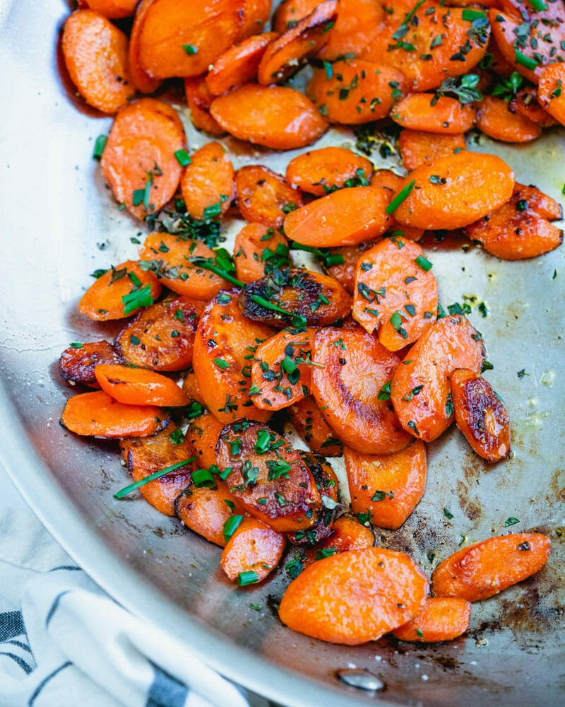

Sanguine Sauteed Carrots

Description
Sauteed carrots are the perfect side dish, providing veggies when you might not have them prepared. They're very simple. and are the most tender, buttery, savory, coins, with a hint of herbaceous fresh thyme and chives. They taste like the best carrots you’ve ever had: but they only have 4 ingredients!
How Much Thyme Will It Take?
10 Minutes
Ingredients
- Carrots
- Olive Oil
- Fresh Thyme
- Kosher Salt
Steps
- Peel the carrots and slice them diagonally into nice rounds
- Heat the olive oil in a large skillet over medium high heat. Add the carrots and cover. Cook for 4 minutes without stirring.
- Remove the lid, stir, and add kosher salt. Continue to saute uncovered 3 to 4 minutes until browned, stirring occasionally. Remove from the heat and stir in the fresh herbs and a few more pinches kosher salt to taste. Serve immediately.